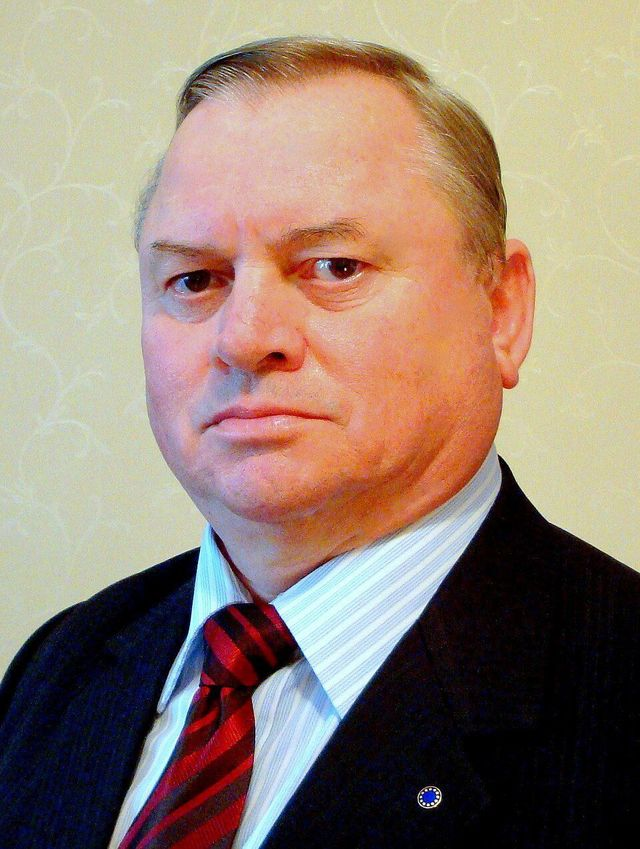
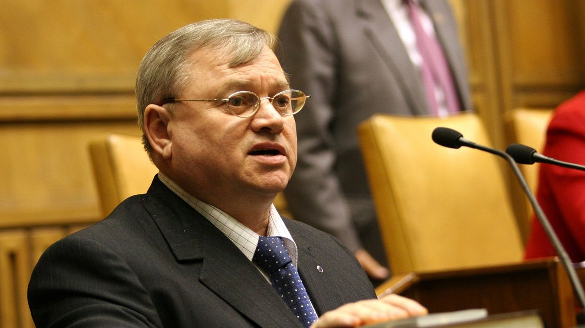
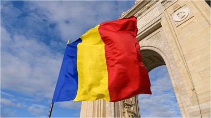
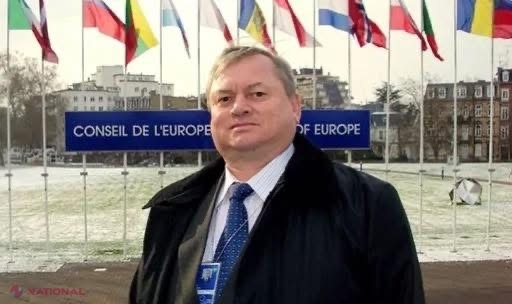

Ilie Ilașcu
Viața și Activitatea Patriotică
1952 - 2025
Erou al luptei pentru libertate și unitate națională
Află Mai Mult
Viața și Activitatea Patriotică
1952 - 2025
Erou al luptei pentru libertate și unitate națională
Află Mai MultIlie Ilascu este un om politic și patriot remarcabil, dedicat vieții sale pentru cauza națională și pentru promovarea valorilor patriotice. Activitatea sa se întinde pe decenii de implicare în viața publică și în lupta pentru drepturile și interesele poporului român.
Prin activitatea sa neobosită, Ilie Ilascu a demonstrat un angajament profund față de principiile democrației, justiției sociale și unității naționale. Contribuțiile sale au lăsat un impact durabil în comunitate și au inspirat mulți alți oameni să urmeze calea serviciului public.
Această platformă prezintă viața, realizările și activitățile patriotice ale lui Ilie Ilascu, oferind o perspectivă completă asupra dedicării sale necondiționate pentru țară și popor.

Fondator și lider al Mișcării de Eliberare Națională din Basarabia (1988-1992) și președinte al Frontului Popular din Moldova - Filiala Tiraspol, care a ajuns la peste 5000 de membri activi înainte de a fi lichidată de forțele separatiste.

În 1992, a participat la luptele armate de la Nistru în calitate de comandant al unor trupe speciale ale Ministerului Securității Naționale din Republica Moldova, luptând în spatele frontului și provocând mari pierderi Armatei 14 Rusești.

A rămas închis timp de nouă ani (1992-2001) în condiții grele, condamnat la moarte de o instanță neconstituțională, dar a continuat să lupte pentru cauza românilor basarabeni și pentru unirea cu România.

Deputat în Parlamentul Republicii Moldova (1994-2001, inclusiv în timpul detenției) și senator în Parlamentul României (2000-2008), membru al Adunării Parlamentare a Consiliului Europei (2001-2008).

Susținător vocal al drepturilor limbii române, identității românești și al aliniării Republicii Moldova cu România și Europa, promovând valorile culturale și naționale românești.

Cazul său a fost judecat de Curtea Europeană a Drepturilor Omului, care a decis în 2004 că Rusia și Republica Moldova sunt responsabile pentru încălcarea drepturilor omului. A fost decorat cu Ordinul Național "Steaua României" și Ordinul Republicii din Moldova.
Pentru mai multe informații despre activitatea lui Ilie Ilascu sau pentru a lua legătura, vă rugăm să folosiți informațiile de mai jos.